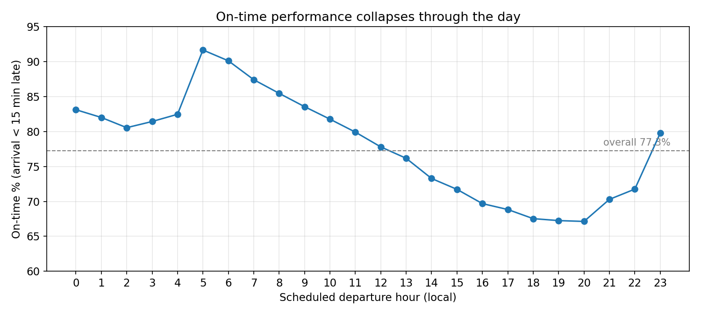
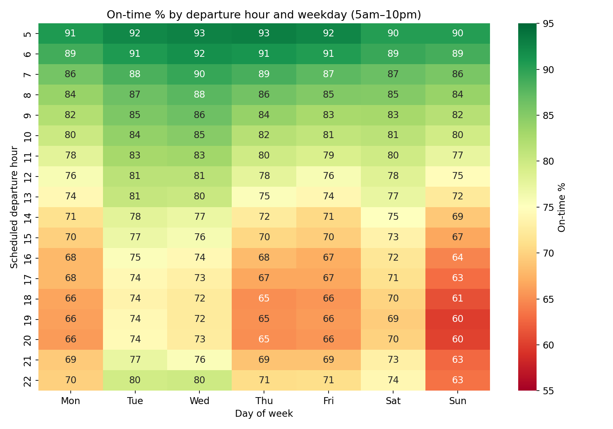
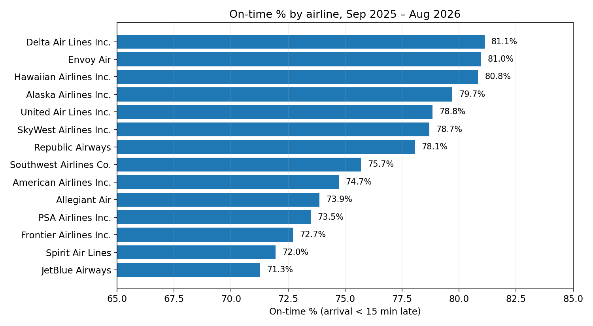
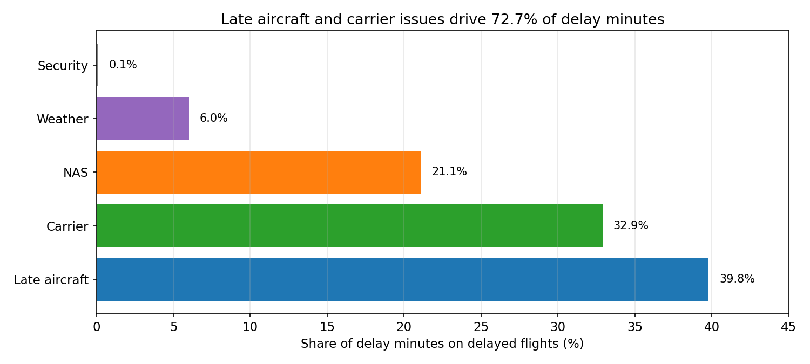
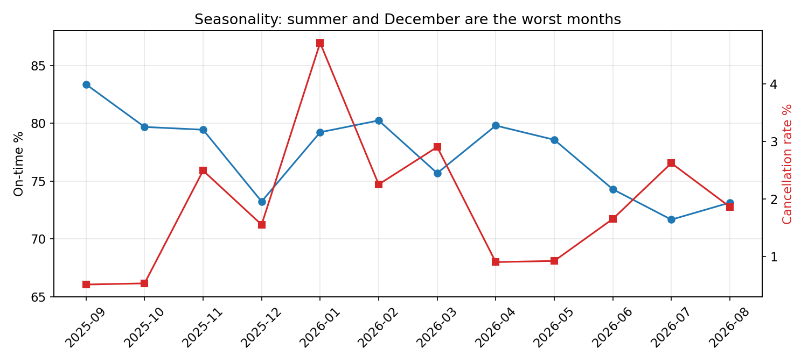

Delays build through the day
On-time performance falls from 91.7% on 5am departures to 67.3% by 7pm. Delays cascade: a late aircraft in the morning is still late in the evening.

When is it worst? Hour by weekday
Sunday evenings are the worst slot in the week (60–63% on time, 6–10pm). Tuesday and Wednesday mornings are the best (up to 93%).

Best and worst airlines
Delta leads the large carriers at 81.1% on time; JetBlue trails at 71.3%.

What causes delays?
Late aircraft (39.8%) and carrier issues (32.9%) dominate. Weather is only 6.0% of delay minutes.

Seasonality
July 2026 was the worst month (71.7% on time) and September 2025 the best (83.4%). January 2026 had the highest cancellation rate (4.7%).

Worst 10 routes (1,000+ flights)
| Route | Flights | On-time | Avg delay |
|---|---|---|---|
| SBP–SFO | 1,125 | 56.4% | 32.8 min |
| ACV–SFO | 1,254 | 56.5% | 35.2 min |
| LAS–SFO | 6,088 | 58.0% | 26.5 min |
| RNO–SFO | 1,951 | 59.3% | 27.2 min |
| BUR–SFO | 3,060 | 59.3% | 29.0 min |
| ORD–ASE | 1,089 | 59.4% | 37.9 min |
| SAN–SFO | 6,631 | 59.5% | 25.4 min |
| HPN–DCA | 1,250 | 59.6% | 45.6 min |
| SEA–SFO | 6,739 | 59.8% | 24.1 min |
| DAL–LGA | 1,474 | 59.8% | 27.5 min |
Six of the ten worst routes end at San Francisco.
Busiest airports
| Airport | Flights handled | Arrival on-time | Avg arr. delay |
|---|---|---|---|
| ORD, Chicago | 702,423 | 73.2% | 25.5 min |
| DEN, Denver | 631,887 | 79.1% | 16.3 min |
| ATL, Atlanta | 617,950 | 82.1% | 14.9 min |
| DFW, Dallas/Fort Worth | 606,441 | 78.2% | 21.5 min |
| SFO, San Francisco | 293,319 | 66.3% | 23.3 min |
| SLC, Salt Lake City | 233,490 | 84.5% | 11.7 min |
Full airport table: dashboard/04_airports_q1.csv
Recommendations
Fly early. Departures before 9am run 83–92% on time; after 6pm it drops to about 67%.
Avoid SFO for connections, especially in the evening — 6 of the 10 worst routes end there, and SFO arrivals run only 66.3% on time.
Prefer Delta or Alaska for reliability (81% / 80% on time). Budget carriers trade price for punctuality (JetBlue 71%, Spirit 72%, Frontier 73%).
Build buffer time on multi-leg trips. Late aircraft causes 39.8% of delay minutes and appears in 52.2% of delayed flights.
Avoid Sundays and July when the schedule allows (73.0% and 71.7% on time).